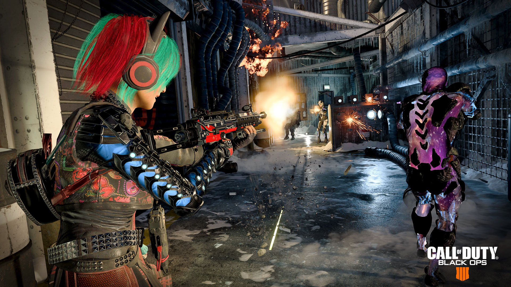
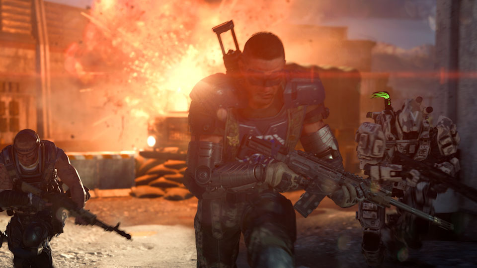

BLACK OPS 4 SPOTLIGHT
Là một phần của Chiến dịch Dark Divide , các thành viên Black Ops Pass sẽ có thể thực hiện chuyến đi xuống làn đường bộ nhớ với Khởi chạy bản đồ nhiều người chơi . Tại đây, bạn sẽ chiến đấu trên một bản đồ cỡ trung bình chơi nhanh và điên cuồng khi một tên lửa bị khóa, nạp và phóng vào giữa trận đấu.
Mặc dù bản đồ này có thể cảm thấy quen thuộc với các cựu chiến binh của nhượng quyền Call of Duty , nhưng Chuyên gia Black Ops 4 cho phép một số chiến lược mới để xem xét khi bạn muốn loại bỏ sự cạnh tranh trên Launch .

Bên ngoài con đường phía bắc, đến trung tâm bản đồ bao gồm việc đi qua những con hẻm chật hẹp giữa các tòa nhà, có khả năng thuận lợi cho các cuộc đấu súng tầm gần, do đó người chơi có thể sử dụng các chiến lược tương tự.
Trung tâm bản đồ nằm trên hai đường nghiêng hội tụ, tạo ra sự năng động hơn bằng cách có nhiều mảnh che môi trường, hai vị trí sức mạnh ở phía nam và một chiếc xe tên lửa mà người chơi có thể di chuyển để tăng độ cao cho kẻ thù ở gần trung tâm từ nhiều làn đường khác nhau.
Cân nhắc trang bị vũ khí tầm trung đến vũ khí dài và vũ khí và trang bị Chuyên gia thiên về độ chính xác và có độ sát thương cao như Annihilator của Seraph, Sparrow của Outrider và T empest của Prophet. Trong khi đó, ở những nơi khác trên bản đồ, Mô-men xoắn có thể hạn chế di chuyển qua một hoặc hai làn đường hẹp bằng cách sử dụng Dao cạo hoặc Rào chắn, hoặc Nomad có thể làm điều tương tự với Mỏ lưới của mình.
Phần còn lại của các Chuyên gia cũng đáng xem xét do tính linh hoạt của chúng trên Launch . Từ 9-Bang của Ajax đến Kẻ phá rối EMP của Zero và ở mọi nơi ở giữa, có một trường hợp nhất định để chọn mọi Chuyên gia Trò chơi Bạn chỉ cần tự mình tìm hiểu làm thế nào họ có thể biến trận chiến trên Launch .
